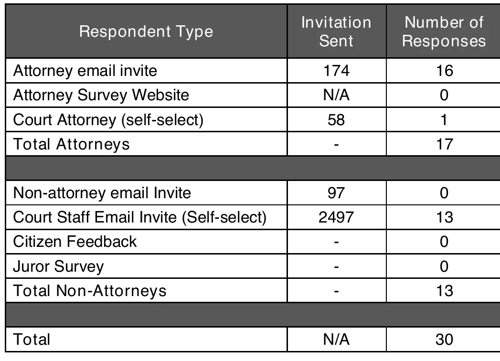
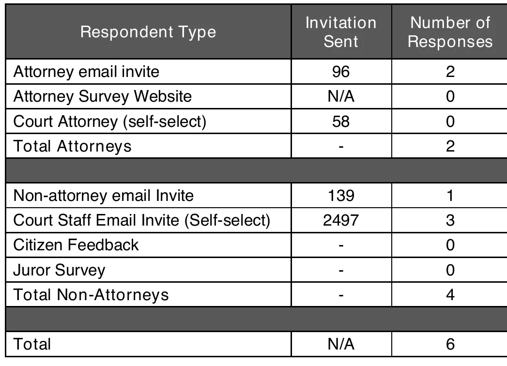
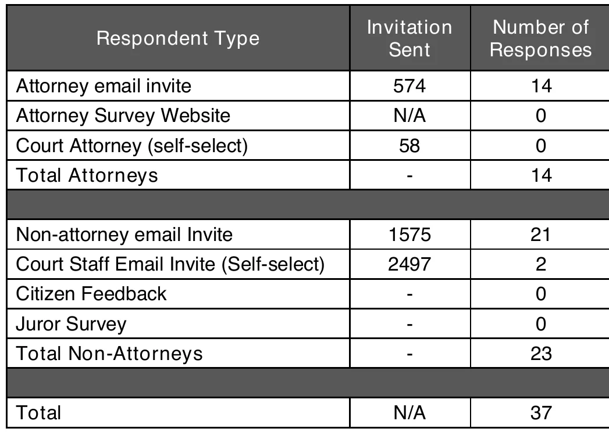

Why this site exists
Colorado voters are asked every two years whether judges should keep their jobs. The people who actually watch judges work (people in the case, jurors, observers, attorneys) rarely get a simple way to say what they saw. And voters rarely get a simple way to read it.
The problem in three minutes
What the state does today
Colorado’s Office of Judicial Performance Evaluation (OJPE) and its commissions evaluate judges using surveys, courtroom observation, interviews and public reports. That work matters, and the results are published online.
- The surveys are run by a private research firm outside Colorado. The state’s 2024 survey reports name it on the cover: Market Decisions Research of Portland, Maine.
- Invitations go out by email. The reports count the emails sent, not the emails that reached an inbox rather than a spam folder.
What the state’s own numbers show
- In the state’s 2024 voter survey (423 voters), 53% knew that judges are evaluated, and only 23% knew the commissions exist. 33% said most voters do not have the information they need.
- In the 2024 cycle, 117,355 members of the public were invited by email to evaluate judges. 6,614 responded: 6%.
- Jurors and citizens are not sampled evenly. The state’s own report says their response rate “cannot be calculated”, because court staff choose which judges are evaluated and citizens choose to take part.
- The number of people behind one judge’s score can be small. One district judge’s 2024 report rests on 42 people, and in it 18 of 1,072 invited attorneys responded. A 2017 report for another judge counts 5 completed juror surveys out of 13 sent.
These are the state’s own published figures. They are not accusations. They are the reason a second, simpler and open way to share what you saw in court is useful.
Three examples from the state’s own reports
Every official 2024 survey report opens with a table like these, showing how many invitations were sent and how many people answered. The pictures are cropped straight from the state’s PDFs. Tap one to open the whole report.



These three are not the exception. We read every 2024 report that uses this table: 96 trial-court judges.
- Half of the reports rest on 33 people or fewer. 20 of them rest on 20 people or fewer.
- The juror survey row shows 0 in 82 of the 96 reports. Citizen feedback shows 0 in 89.
- Across all 96, 37,501 email invitations to people other than attorneys brought 1,234 answers (3.3%). 40,276 email invitations to attorneys brought 1,749 (4.3%).
These numbers describe how the information was collected. They say nothing about the judges themselves.
What we do differently
- You can rate in about 30 seconds, on your phone, in English or Spanish, right after you leave the courtroom.
- No account and no name. The site is built to know as little about you as possible.
- The questions ask about what people can actually see, not about legal outcomes.
- Results are public right away, split by who was rating, and every moderator decision is on the record.
- It is an independent, open-source public project made for the residents of Colorado. Anyone can read the code, test it and suggest changes, and the code belongs to the public, not to a company or an agency. Our rule: moderators and maintainers must be verified Colorado residents (the verification process will be published here). Everything is done in the open so that anyone can check it.
A public record, not only a scorecard
This is not only a scorecard for voters. It is a standing public record, and a record changes behavior on its own: officials act differently when the people they serve can see and compare their work.
What this site is not
- It is independent. It is not part of, endorsed by, or connected to the State of Colorado, its courts or any commission.
- It is not an official evaluation and not legal advice. It does not replace the commissions’ work.
- Ratings are opinions about conduct in a courtroom. They are not findings of fact.
- Comments are the personal opinions of the people who wrote them. We collect them so that anyone who was in court can be heard. A moderator checks that a comment follows our rules, not whether what it says is true. Verify anything important yourself.
- The judges and prosecutors here are public officials. Honest opinions about how public officials conduct themselves are protected speech. False statements of fact are not, which is why we ask only about what people saw.
- The judges and prosecutors listed are real Colorado officials, taken from the official lists of the Colorado Judicial Branch and the district attorneys’ offices. Every rating comes from a person who used this site.
Join in
Want to help as a volunteer, programmer, tester, translator, lawyer or by spreading the word? Use the “Get involved” form in the footer. The code will be published as open source before launch, and the repository address will be posted here.
- State of Colorado, 2024 voter survey report (OJPE)
- A 2024 district judge retention report (OJPE) — Table 1 and “Response Rates”
- A 2017 interim report for one judge (OJPE) — Table 4 “Response Rates”
- Colorado Office of Judicial Performance Evaluation
- Market Decisions Research, Portland, Maine (the firm named on the state’s 2024 survey reports)